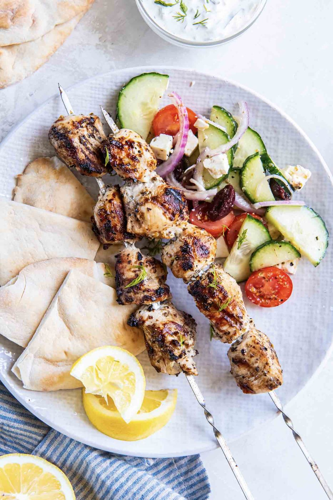
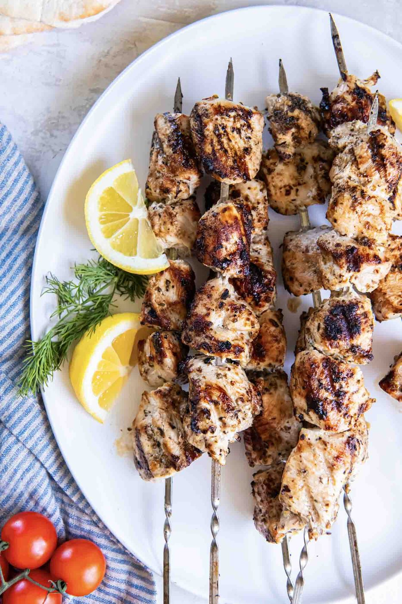
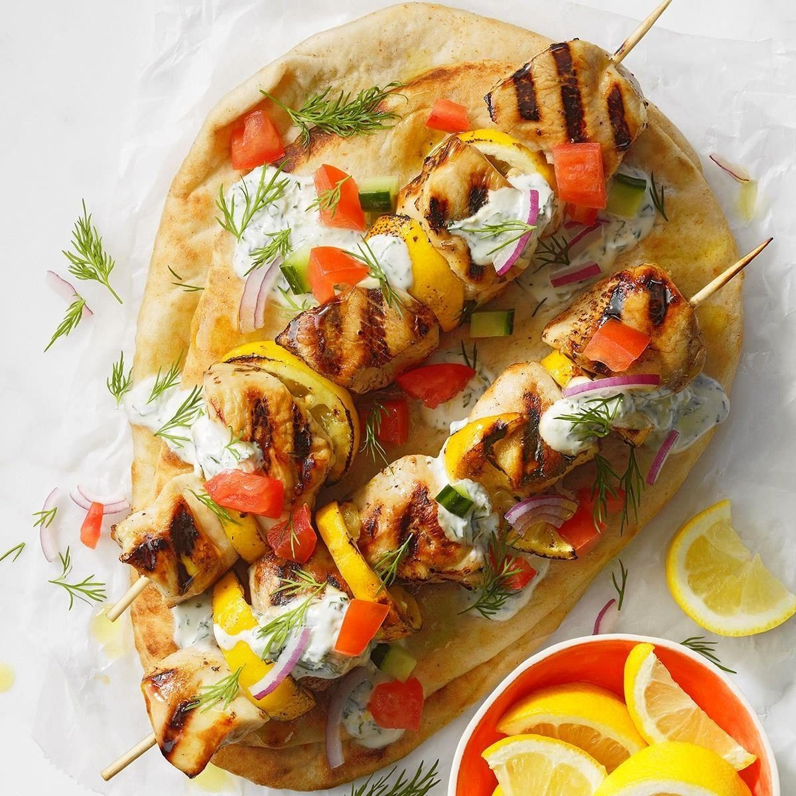
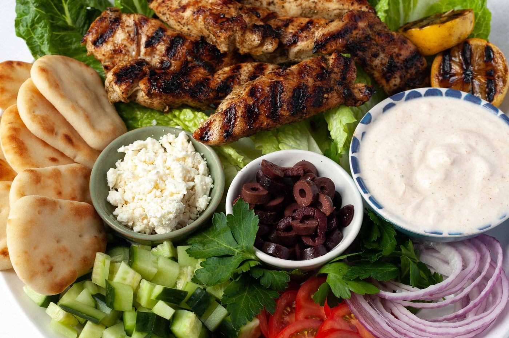
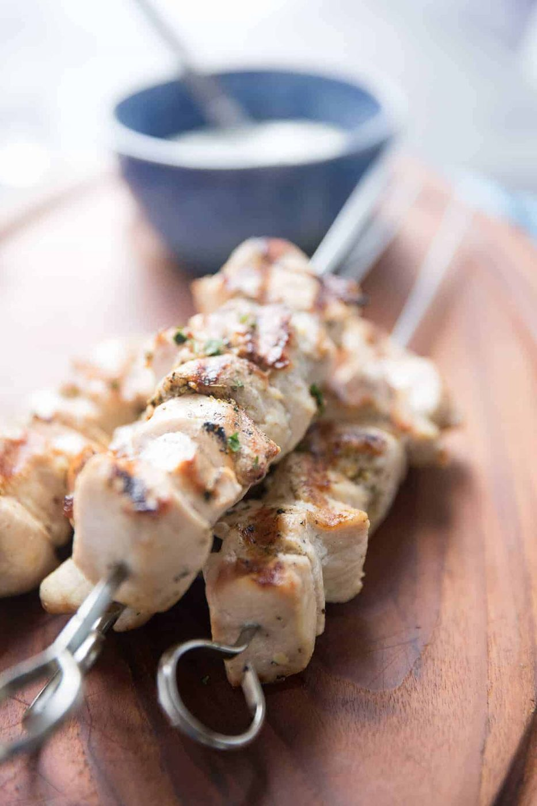
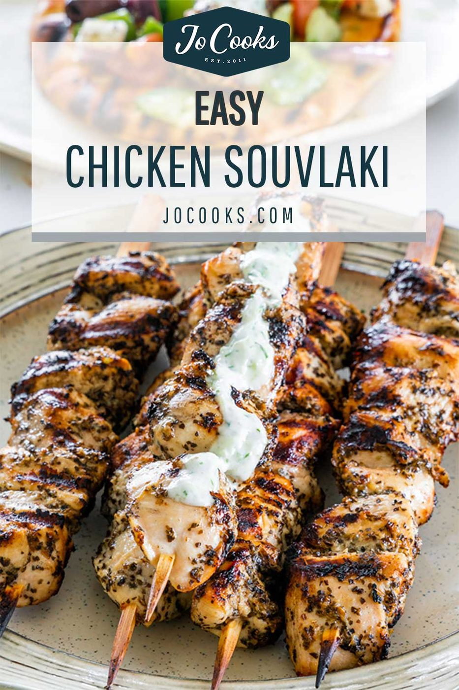
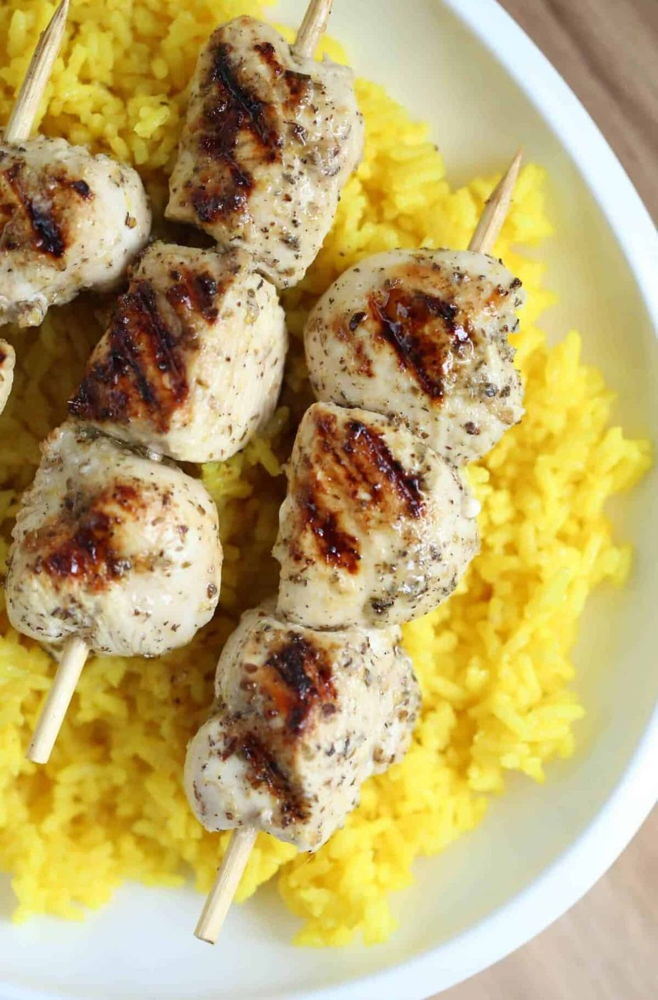

← Mediterranean Sun
Chicken Souvlaki
Lemon-oregano skewers, tzatziki with real garlic authority, and warm pita — Greece in fifteen minutes of grilling.
Lemon-oregano skewers, tzatziki with real garlic authority, and warm pita — Greece in fifteen minutes of grilling.
Souvlaki is Greek street food distilled: small chunks of marinated meat on skewers, grilled hard, wrapped in pita with tzatziki, tomato, and a shake of dried oregano. Where shawarma is a spice marathon, souvlaki is a sprint — lemon, garlic, oregano, olive oil, done. The marinade is simple because the grilling does the heavy lifting.
Tzatziki deserves the same respect: full-fat Greek yogurt, cucumber squeezed genuinely dry (wet tzatziki is a puddle), garlic grated to paste, dill, a thread of vinegar. Make it an hour ahead so the flavors settle. Then the only real technique left is knowing when the skewers are done — caramelized edges, springy center, juices running clear, and that instant when the grill smell makes everyone wander into the kitchen.
serves 4 — tick items off as you shop; it saves as you go
Whisk oil, lemon, garlic, oregano, paprika, salt, pepper. Coat the chicken and refrigerate 2 hours minimum, 8 maximum — beyond that the lemon starts curing the surface.
Grate cucumber, salt lightly, squeeze in a towel until almost no water remains — genuinely dry. Fold into yogurt with garlic paste, dill, vinegar, salt. Refrigerate an hour; it thickens and mellows.
Thread chunks so they touch but aren't crushed — packed skewers steam, loose ones dry out. If using wooden skewers, soak 30 minutes so they don't become kindling.
High heat, grill or cast-iron pan, 3-4 minutes per side, turning once or twice, until charred at edges and cooked through (74°C / 165°F internal). Total 10-12 minutes.
Warm pitas on the grill for 30 seconds per side. Wrap chicken with tzatziki, tomato, onion, and an extra drizzle of oregano oil. Charred lemon halves squeezed over everything — this is the move people remember.







Images are web-sourced via image search and self-hosted. Original sources:
https://z-cdn.chatglm.cn/image-search-mcp/images-ppt/0fe57ac56b46.jpghttps://z-cdn.chatglm.cn/image-search-mcp/images-ppt/14a261eea3ec.jpghttps://z-cdn.chatglm.cn/image-search-mcp/images-ppt/4038133ac1e2.jpghttps://z-cdn.chatglm.cn/image-search-mcp/images-ppt/59d0424bf898.jpghttps://z-cdn.chatglm.cn/image-search-mcp/images-ppt/87b03c37a34e.jpghttps://z-cdn.chatglm.cn/image-search-mcp/images-ppt/c35af44e897b.jpghttps://z-cdn.chatglm.cn/image-search-mcp/images-ppt/c945b2437b64.jpgVerified working videos — click a card to load the embed.


Powered by GitHub Issues — the backup kitchen. One issue per recipe; your comment lands in the repo.